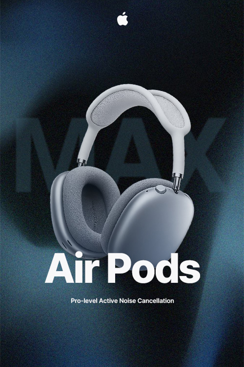
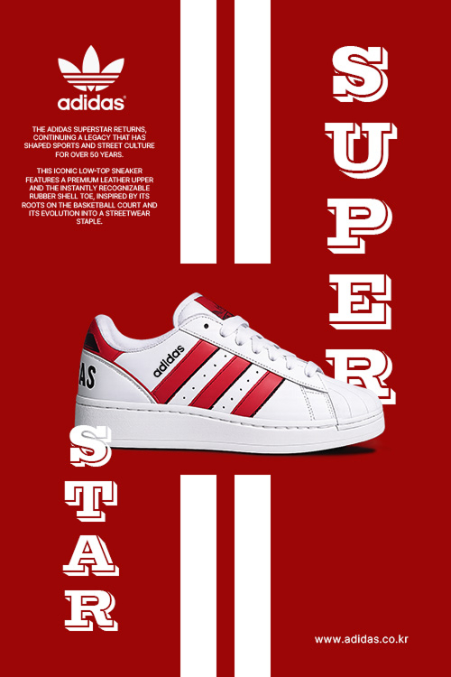
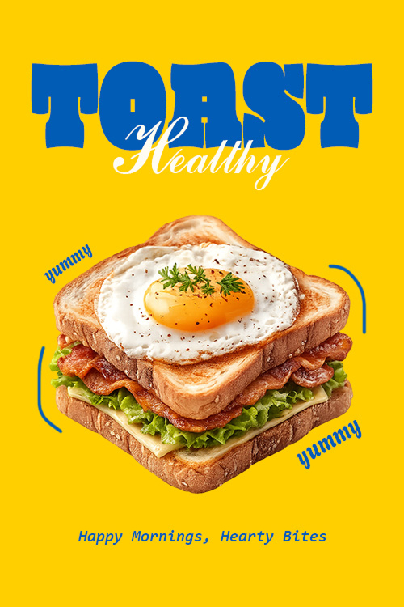
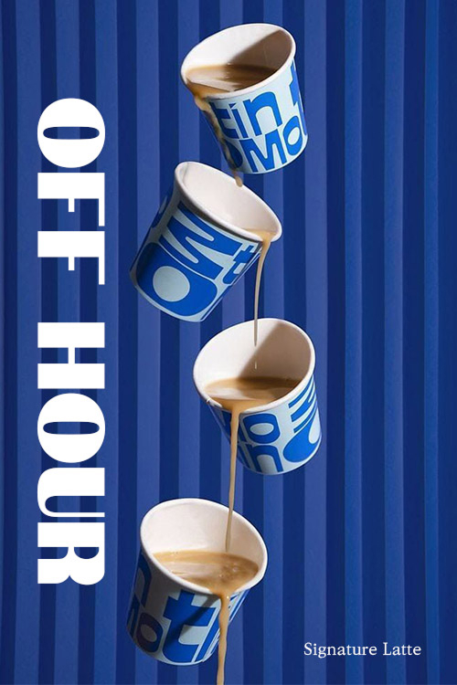

HTML, CSS, JavaScript의 탄탄한 기본기를 바탕으로 다양한 디바이스 환경에서도 안정적으로 작동하는
구조를 설계하며, 작은 인터랙션 하나까지도 의도를 담아 구현하겠습니다.
신입이지만 빠르게 배우고 적극적으로 개선하며, 결과물로 성장 과정을 증명하겠습니다.
또한 단순히 화면을 구현하는 데 그치지 않고, 늘 사용자의 흐름과 경험을 함께 고민하는 자세로 임하여
더 나은 사용자 경험을 스스로 만들어내는 퍼블리셔가 되겠습니다.
완성도 높은 결과물은 정확한 구현과 원활한 협업에서 만들어진다고 생각합니다.
디자인 의도를 정확히 이해하고, 개발자가 활용하기 좋은 구조로 구현하기 위해 끊임없이 소통합니다.
시맨틱 마크업과 일관된 구조 설계를 통해 협업 효율을 높이고, 유지보수에 용이한 퍼블리싱을 지향합니다.
피드백을 적극적으로 수용하며 더 나은 결과를 위해 유연하게 개선하고, 함께 완성도를 높여갑니다.
더 나은 사용자 경험을 구현하기 위해, 다음과 같은 퍼블리싱 역량을 갖추고 있습니다.
컴포넌트 단위의 구조 설계와 재사용 가능한 코드 작성으로 효율적인 퍼블리싱 환경을 구축합니다.
다양한 디바이스 환경을 고려한 반응형 웹 구현으로, 일관된 사용자 경험을 제공합니다.
레이아웃 오류나 인터랙션 이슈를 구조적으로 분석하고, 코드 기반으로 문제를 해결합니다.
디자인 툴을 활용하여 사용자 경험과 브랜드를 고려한 시각적 결과물을 제작할 수 있으며, HTML5, CSS3, JavaScript를 기반으로 반응형 웹과 인터랙션을 구현할 수 있습니다. 또한 Git과 GitHub를 활용하여 협업과 버전 관리를 체계적으로 수행할 수 있습니다.
시맨틱 마크업을 기반으로 구조화된 웹 문서를 작성할 수 있으며, 유지보수와 확장성을 고려한 코드 설계를 할 수 있습니다.
Flexbox와 Grid를 활용한 반응형 레이아웃을 구현할 수 있으며, 다양한 디바이스에 대응하는 UI를 제작할 수 있습니다. 또한 애니메이션과 트랜지션을 활용하여 사용자 경험을 향상시킬 수 있습니다.
사용자 인터랙션을 구현할 수 있으며, 이벤트 처리와 DOM 제어를 통해 동적인 UI를 구성할 수 있습니다. 간단한 기능부터 실제 서비스에 필요한 인터랙션까지 구현할 수 있습니다.
다양한 디바이스 환경을 고려한 이미지 보정 및 배너, 상세 페이지 등 웹 콘텐츠 디자인을 제작할 수 있으며, 색감과 레이아웃을 조정하여 완성도 높은 결과물을 구현할 수 있습니다.
브랜드에 맞는 아이콘과 벡터 그래픽을 제작할 수 있으며, 확장성과 활용도를 고려한 그래픽 요소를 설계할 수 있습니다.
사용자 흐름을 고려한 UI/UX 구조를 설계할 수 있으며, 와이어프레임부터 프로토타입까지 제작하여 실제 서비스에 가까운 형태로 시각화할 수 있습니다.
버전 관리를 통해 작업 이력을 체계적으로 관리할 수 있으며, 브랜치 전략을 활용하여 기능 단위로 작업을 분리하고 안정적으로 병합할 수 있습니다.
협업 환경에서 코드 공유 및 이슈 관리, 협업 커뮤니케이션을 수행할 수 있으며, 프로젝트 단위로 효율적인 코드 관리가 가능합니다.
{ Point of Focus }
가로사이즈 500px로 짧은 순간 사용자의 시선을 낚아채는 매력적인 디자인을 제작해보았습니다.


제품을 중심으로 한 미니멀한 구성과 어두운 배경 대비를 활용해 시선을 집중시키고, '노이즈 캔슬링'의 몰입감을 시각적으로 표현한 포스터입니다.
타이포그래피는 정보 위계를 고려해 배치하여 브랜드의 프리미엄 이미지를 강조했습니다.

강렬한 레드 컬러와 브랜드의 상징적인 스트라이프를 중심으로 시각적 임팩트를 극대화했으며, 타이포그래피를 세로로 배치해 역동적인 흐름을 만들었습니다.
제품을 중심으로 한 균형 잡힌 레이아웃을 통해 스포츠 헤리티지와 스트리트 감성을 동시에 표현한 포스터입니다.

강렬한 옐로우 컬러를 기반으로 시선을 빠르게 유도하고, 볼드한 타이포그래피와 자유로운 그래픽 요소를 활용해 경쾌한 리듬감을 표현했습니다.
중앙의 제품 이미지를 강조하여 아침 식사의 활기찬 이미지를 직관적으로 전달한 포스터입니다.

연속적으로 흐르는 컵과 커피의 움직임을 통해 시각적인 리듬감을 형성하고, 자연스럽게 시선이 아래로 이어지도록 설계했습니다.
블루 톤의 배경과 대비되는 따뜻한 커피 컬러를 활용해 브랜드의 시그니처 이미지를 강조한 포스터입니다.
{ Designed to Communicate }
디자인과 콘텐츠의 흐름을 고려해,
사용자에게 직관적으로 전달되는 구조 중심의 포스터를 제작했습니다.
{ Product Detail Page }
가상의 상품에 대한 상세페이지를 AI어시스턴스와 디자인 툴 포토샵 일러스트레이터를 사용하여 디자인해보았습니다.